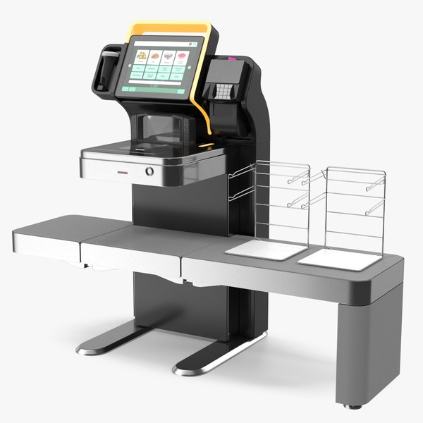
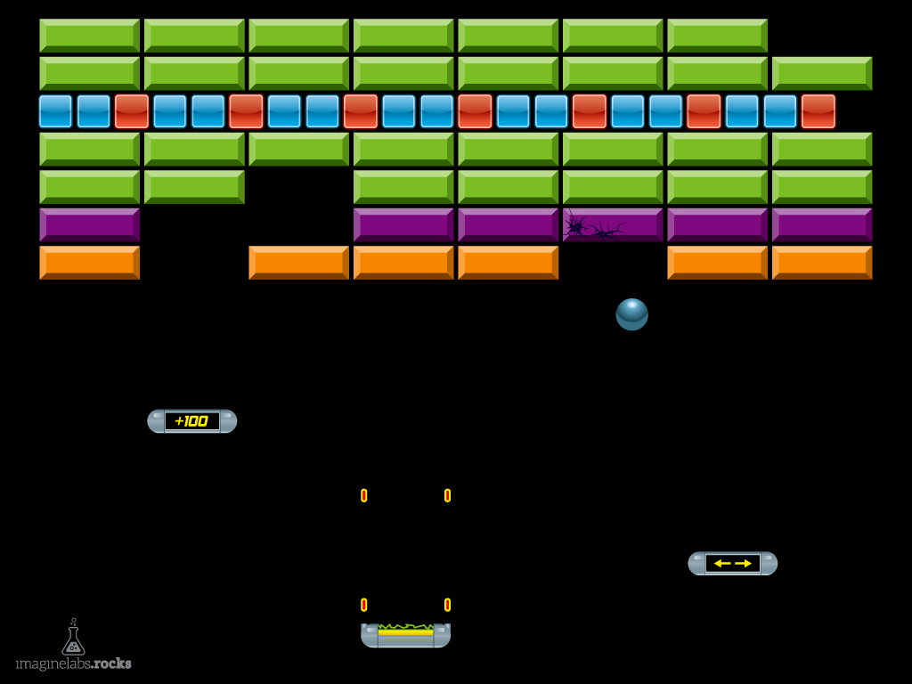

My Projects
Here are some of my projects.
- Created my own personal portfolio website to show resume, projects etc using Javascript, CSS/HTML.
- Used CSS tools to create neon button effects for the top bar.

Built a supermarket cashier system using C++ where more the barcode number is entered and added to basket.

Built the well known brick breaker game using Java.
Completed table creation and population, E-R Modelling, Physical Modelling, Querying for bogus organization.
Created an e-voting system using blockchain technology and implemented it on testnet.
Created a number guessing game where the user tries to guess what number the computer has chosen between a range of numbers.